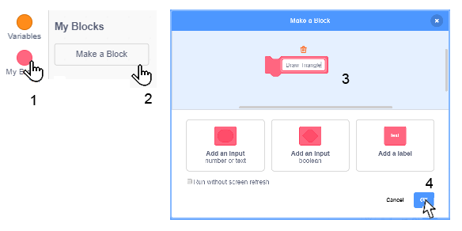
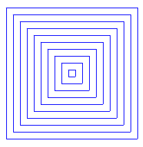
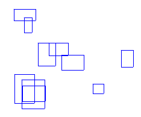

Kako programirati brže – Procedure¶
Projekti koje ćemo proučavati imaju složenu strukturu. Da bismo se nosili s ovom složenošću, upotrijebit ćemo pristup poznat kao strukturirano programiranje razvijeno u 1960-ima. Ovaj je pristup pojednostavio proces pisanja, razumijevanja i održavanja složenih programa. Umjesto pisanja složenih programa koje je teško otkriti i koje je po potrebi teško prepraviti (zvanih održavanje), oni se raščlanjuju na male dijelove, od kojih svaki rješava jedan dio cjelokupnog problema.
Da bi složeni strukturni projekti bili brži i jednostavniji, podijelit ćemo velike skripte na logičke dijelove, a svaki od njih ima jednu funkciju. Takve dijelove nazivamo postupcima. Svaki od postupaka ima određenu funkciju, a jedna skripta, glavni program, poziva ih i povezuje u jednu cjelinu.
Realizacija postupaka na Scratchu
Jedan od načina za izvršavanje postupaka na Scratchu i stvaranje složenih algoritama tako jednostavno je korištenje poruka, isti mehanizam koji smo poznavali već pri sinkronizaciji znakovnih radnji. Drugi način implementacije postupaka je uvođenje vlastitih naredbi.
Kako se izrađuju novi blokovi
Da biste stvorili novi blok, odaberite grupu My Blocks (1), a zatim kliknite gumb Make a Block (2). Pojavit će se dijaloški okvir koji vam omogućuje stvaranje novih blokova. U okvir naziva bloka utipkajte ime (3), poput Nacrtaj trokut i potvrdite klikom na gumb U redu (4).
U paleti blokova pojavit će se novi blok Draw Triangle (1), a novi početni blok define (2) u području skripte, kojem će se pridružiti niz blokova za crtanje trokuta (3).

Novi blok može imati i polja za unos. Zahvaljujući tome možemo izvući isti blok za crtanje trokuta s različitim duljinama stranica. Da bismo to učinili, moramo odabrati opciju Edit iz izbornika prečaca kojim desnom tipkom miša kliknemo na novi blok (1). Dijaloški okvir Uredi blok ponovno će se otvoriti. Od tri ponuđene mogućnosti dodavanja novih polja u blok, odabrat ćemo Dodaj unos broja ili teksta (2), a naš će blok imati odgovarajuće polje unosa (3) u koje ćemo unijeti a - naziv varijable za duljinu stranice trokuta.

Kad bismo odabrali Dodavanje ulaznog boola, polje unosa bilo bi šesterokutnog oblika i moglo bi prihvatiti samo logičke blokove, a odabirom opcije Dodavanje oznake osiguralo bi se da se tekst na bloku ispisuje iza polja unosa.
Upamtite. Na svakom mjestu gdje se koristi varijabla a u definicijskim blokovima, reporter te varijable mora se povući iz zaglavlja blok definicije (4). Dakle, ne slovo a, niti reporter a iz blok palete, već reporter iz zaglavlja definicije! 
Naziv a koji smo unijeli u zaglavlje definicije postupka Nacrtajmo trokut naziva se parametrom. Postupci također mogu imati više parametara. Na primjer, možemo stvoriti jedan postupak Crtanje poligona koji crta pravilne poligone s različitim brojem stranica, različitih duljina. Umjesto definiranja zasebnih blokova za crtanje trokuta, četverokuta i drugih poligona, s zadanom duljinom stranice definirat ćemo samo jedan blok s parametrima za broj stranice i duljinu stranice. Specifične vrijednosti parametara bit će navedene kao argument za novo uvedenu naredbu. Ovaj će argument nadvladati svaku pojavu broja stranica u postupku. Možemo reći da je parametar imenovano rezervirano mjesto za argument.
 Prouči sljedeće primjere projekta¶
Prouči sljedeće primjere projekta¶
Primjer 1 – Projekt “Grid”¶
Crtanje horizontalnih linija
Da bismo nacrtali vodoravnu liniju (paralelnu s osi x), moramo povezati sve točke koje imaju istu koordinatnu vrijednost y. Na primjer, ako je x = 0, sami crtamo osi x. U početku olovku stavite na lijevi rub ekrana u točku (-240,0), spustite je da ostavi trag i pošaljite je u točku (240,0). Mi ga pokupimo tamo i možemo preći na crtanje sljedećeg retka.
Ako želimo nacrtati sve vodoravne crte čija je koordinata broj koji završava cifrom 0 (djeljiv sa 8), ponavljamo gore opisani postupak za y = 180, 170,…, -180.

Da bismo postupak učinili transparentnijim, razdvojit ćemo upute za crtanje jedne vodoravne crte u zasebnu cjelinu - postupak koji će se, ako je potrebno, nazvati.

Crtanje vertikalnih linija
Slično kao crtanje vodoravne crte, da bismo nacrtali okomitu liniju, moramo povezati sve točke koje imaju istu vrijednost koordinata x. Prvo, olovku stavite na gornji rub zaslona, na primjer, točku (0,180), spustite je da ostavi trag, i pošaljite je da sklizne do točke (0, -180). Mi ga pokupimo tamo i možemo preći na crtanje sljedećeg retka.
Ako želimo izvući sve okomite linije čija je h koordinata broj djeljiv s 10, ponovimo gore opisani postupak za x = -240, -230, …, 240.

Za pamćenje slike rešetke kvadrata dobivenih crtanjem vodoravnih i vertikalnih linija na ovaj način, potrebno je da desnom tipkom miša kliknemo na pozornicu. Pojavit će se opcija Spremi sliku kao mogućnost koja omogućuje spremanje scenske slike kao pozadinske slike. (Za sada se ova značajka može koristiti samo u mrežnom uređivaču)
Spremite projekt pod nazivom Grid.
Primjer 2 – Projekt “Various Grids”¶
Želimo generalizirati prethodni program i koristiti ga za crtanje rešetke većih ili manjih kvadrata, kao i za crtanje rešetke koja ne mora započeti u gornjem lijevom kutu ekrana i završiti u donjem desnom kutu. Uvodimo varijable x min, x max, y min, y max i korak. Oni će definirati gornji lijevi dio mreže (x min, y max), donji desni dio mreže (x max, y min) i veličinu kvadrata u mreži. Postavit ćemo početne vrijednosti iz ulaza.
Tako možemo izmijeniti projekt Grid, koji samo jednu mrežu uvlači u općenitiji projekt različitih mreža, koji može crtati različite mreže ovisno o ulazu. Pored nabrojanih varijabli, uveli smo i krajnju varijablu koja je u početku postavljena na 0, a to se mijenja u slučaju da korisnik više ne želi koristiti program. Svaki odgovor osim potvrdnog, ostavlja vrijednost nepromijenjenom.
Kada korisnik na “Gotovo (da / ne)?” odgovorite s „da“, varijabla mijenja vrijednost u 1 što je uvjet za izlazak iz ciklusa i program se prekida.

Primjer 3 – Projekt “Buildings”¶
U ovom ćemo projektu formirati složene crteže koristeći samo jedan postupak s parametrima. To je postupak Crtanje pravokutnika s parametrima a i b za duljine stranica. Da bismo glavni program učinili transparentnijim, razdvojili smo i inicijalizaciju olovke u poseban postupak PenSetup, koji definira boju i debljinu olovke s kojom crtamo. Sljedeća slika prikazuje skripte koje definiraju ova dva postupka. Varijabla unit definirana je u glavnom programu i omogućuje crtanje proporcionalnih pravokutnika različitih dimenzija.

Izrada projekta
Preuzmite pozadinu Xy-grid-20px iz pozadinske biblioteke. To je kvadratna mreža veličine 24x18 sa stranicama dimenzija 20x20 piksela. (Mogli ste sami napraviti ovu pozadinu pomoću prethodnog projekta). Takva pozadina nam dobro odgovara jer su proporcije crteža koje ćemo stvoriti jasno vidljive.
Pomoću ugrađenog uređivača vektora nacrtajte kvadrat od 8x8 piksela. Koristi alat  , odaberite crtež bez popunjavanja i debljinu konture 2. Podesite sredinu kostima koja će biti u središtu kvadrata.
, odaberite crtež bez popunjavanja i debljinu konture 2. Podesite sredinu kostima koja će biti u središtu kvadrata.

Bilo koji lik mogao bi napraviti crtež, ali ovaj je zgodan jer pokazuje kako se crteži formiraju, a to ne moramo skrivati jer je dovoljno mali da crtež ne zatamni.
Čitav će se crtež sastojati od 4 zgrade širine 5 i visine 13 kvadrata pozadine, dakle, dimenzija 100x260 piksela. U našem scenariju, varijabla jedinice jednaka je duljini stranice od jednog kvadrata pozadine. Varijable a i b programa pohranjuju koordinate točke od koje će početi crtanje zgrade.
Napomena. Isti nazivi imaju lokalne varijable postupka Crtanje pravokutnika, ali vidljive su samo unutar postupka - to su lokalne varijable. Suprotno tome, varijable a i b glavnog programa su globalne varijable, koje se mogu vidjeti posvuda u projektu.
Glavni program u početku inicijalizira varijable, a zatim poziva postupak crtanja zgrade 4 puta, svaki put s različitim koordinatama točke iz koje crtanje započinje. Zgrade se crtaju jedna pored druge jer se h koordinate početne točke crteža povećavaju za širinu zgrade. Sljedeća slika prikazuje glavnu skriptu programa i sliku dobivenu izvršenjem.

Postupak DrawBuilding najprije poziva postupak DrawRectangle dva puta, a zatim postupak DrawWindows. Pri prvom pozivu, DrawRectangle postupak dobiva parametre za crtanje kontura zgrade, a na drugom za crtanje vrata. Sljedeća slika prikazuje skripte postupaka DrawBuilding i DrawWindows.

Da smo postavili 10, dobili bismo dvostruko manji crtež. Sljedeća slika prikazuje rezultat rada programa s parametrima kao u prethodnom objašnjenju (A) i kad se vrijednosti varijabli promijene na sljedeći način: jedinica = 10, promijenite glavni program a = a + 10 x jedinica, promijenite visinu pravokutnika s 13 x jedinice na 23 x jedinici *i broju ponavljanja u *DrawWindows postupku od 5 do 10.

 Odgovori na sljedeća pitanja¶
Odgovori na sljedeća pitanja¶
Pitanje 1¶
- da
- Točno.
- ne
Q-49: Je li glavni program nadređen procedurama?
Pitanje 2¶
- da
- ne
- Točno.
Q-50: Mogu li se u Scratchu procedure realizirati na samo jedan način?
Pitanje 3¶
- da
- Točno.
- ne
Q-51: Može li novi blok imati ulazna polja?
Pitanje 4¶
- da
- Ne, to su argumenti.
- ne
- Točno.
Q-52: Je li točno da se vrijednost koje se upisuju u ulazna polja novog bloka nazivaju parametri?

{kind=link}
{kind=link}
 Pokušaj!¶
Pokušaj!¶
Vježba 1¶
Napravite postupak Square1 s parametrima: x i y koordinate gornjeg lijevog vrha i duljine stranice a. Postupak treba nacrtati kvadrat sa stranicama paralelnim s osi x i y. Zatim stvorite skriptu koja više puta poziva ovaj postupak i crta koncentrične kvadrate kao na sljedećoj slici.
{kind=link}
Vježba 2¶
Napravite postupak Square2 s parametrima: x i y koordinate gornjeg lijevog kuta, duljine stranice a i smjera prve stranice kutom nacrtanim postupkom. Zatim stvorite skriptu koja više puta poziva ovaj postupak i crta 10 kvadrata zajedničkim gornjim lijevim vrhom, istim stranicama tako da se smjer svake sljedeće prve stranice zakreće za 36 stupnjeva od prve stranice prethodnog kvadrata.

Vježba 3¶
Napravite postupak Pravokutnik s parametrima: x i y koordinate gornjeg lijevog vrha i duljine stranica a i b. Postupak treba nacrtati pravokutnik sa stranicama duljine a paralelnim s osi h i stranicama duljine b paralelnim s osi. Zatim stvorite skriptu koja poziva ovaj postupak više puta i crta pravokutnike s argumentima koji su nasumično dodijeljeni, slično kao na sljedećoj slici.
{kind=link}
 Ispravi greške!¶
Ispravi greške!¶
Greška 1¶
- Question
Pitanje: Učenik je želio stvoriti skriptu crtajući granicu trokuta kao na slici A. Napravio je pravilnu skriptu i izvukao postupak koji crta trokut (na slici lijevo od rubnika), ali je dobio rezultat kao na slici B. Gdje je greška?

Odgovor:
U postupku, move steps bloka umjesto parametra reporter postavite varijablu reporter a iz glavnog programa.
 Što smo naučili¶
Što smo naučili¶
U ovoj lekciji smo pokazali kako se postupci mogu provesti na Skcratchu uvođenjem novih naredbi. Pokazali smo kako se mogu napraviti novi blokovi sa i bez polja za unos. Novi blokovi s ulaznim poljima omogućuju da se argumenti proslijede u definiciju bloka i tamo se stave umjesto odgovarajućih parametara. Na taj način, jedan te isti blok može izvršiti nekoliko različitih radnji, ovisno o vrijednosti argumenata.
Primjeri projekta: 8Studio
Novi pojmovi: Procedure, imported commands, parameter.
Nove nardebe:  -
-  ,
,
 Napravi neki od sljedećih projekta¶
Napravi neki od sljedećih projekta¶
Projekt 1 – “Geometrijske figure”¶
Create a version of the project “Geometric Shapes” from lesson 5, by using procedures. Procedures are realized with the use of imported commands.
Projekt 2 – “Gradska ulica”¶
Napravi procedure za crtanje:
pravokutne građevine i vrata raznih veličina,
prozori različitih oblika (kvadrati, pravokutnici, krugovi) i različitih veličina,
krovovi u obliku trapeza različitih veličina i visina baze.
Poveži ove procedure u projekt “Gradske ulice” koji prikazuje niz različitih zgrada.
Projekt 3 – “Aritmetika”¶
Stvorite postupke za povezivanje s aritmetičkim projektom. Postupci trebaju testirati znanje sabiranja, oduzimanja, množenja i dijeljenja. Projekt bi trebao imati sučelje kao na sljedećoj slici.

U gornja dva monitora, uključujući znak aritmetičke operacije, trebalo bi upisati brojeve generirane nasumično, a na donja četiri broja koja bi mogla biti rezultat, s tim da je samo jedan točan. Igrač odabire odgovor za koji misli da je točan pomoću tipke s odgovarajućom strelicom. Ako je odgovor da, prima odgovarajuću poruku i povećava ocjenu za 1. Ako je odgovor netočan, prima odgovarajuću poruku i smanjuje ocjenu za 1. Ispitivanje se završava kada je na 20 pitanja odgovoreno s onim postotkom pitanja koja su tačna. odgovorio.
Formirajte projekt na sljedeći način:
U postupku nasumičnog zbrajanja treba stvoriti dva broja, zbroj c iz intervala [10,20], a prvi zbroj a iz intervala [1,15]. Na temelju njih oblikujte drugi zbroj b = c - a i tri pogrešna rezultata iz intervala [c-3, c + 3].
U postupku oduzimanja, dva broja trebaju se nasumično generirati, oduzimajući a iz intervala [10,20] i oduzimajući b iz intervala [1, a-2]. Na temelju njih formirajte razliku c = a - b i tri pogrešna rezultata iz intervala [c-2, c + 2].
U postupku množenja dva slučaja iz intervala [2,9] moraju se nasumično stvoriti. Na temelju njih oblikujte proizvod c = a * b i tri pogrešna rezultata iz intervala [c-10, c + 10]. Provjerite jesu li pogrešni rezultati veći od oba faktora (npr. Ako je za faktore 2 i 3 generiran pogrešan odgovor 2, ponovite stvaranje).
U postupku slučajne dijeljenja treba stvoriti dva slučajna broja, kvocijent c iz intervala [2,9] i djelitelj b iz intervala [2,9]. Na temelju njih oblikujte razdjelnik a = b * c i tri pogrešna rezultata iz intervala [c-3, c + 3].
U glavnom programu, varijabilne točke i pokušaji trebaju biti postavljeni na 0. Zatim u petlji koja će se ponavljati dok broj bodova ne bude 20 za generiranje aritmetičke operacije, pozvati odgovarajući postupak i smjestiti rezultirajuće operande u odgovarajuće monitore s računanjem i 3 nasumično dodijelite pogrešne odgovore monitorima odgovora. (Raspored odgovora također možete riješiti u posebnom postupku.)
Tada bi program trebao prihvatiti odgovor korisnika i, ovisno o tome je li točan ili ispravan, prikazati odgovarajuću poruku i promijeniti promjenjive točke i pokušaje. Nakon izlaska iz petlje, program bi trebao izvijestiti o tome koliko posto dodijeljenih zadataka korisnik je točno odgovorio.